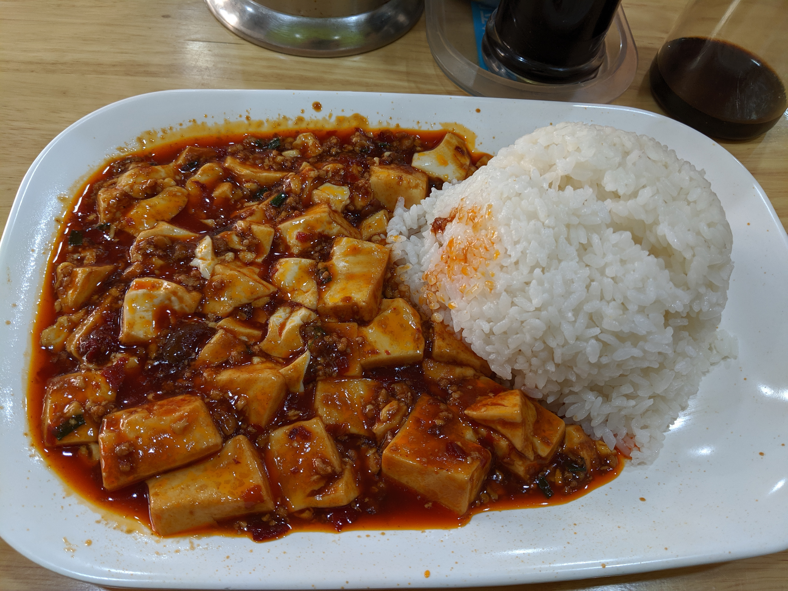

Mapo Tofu

Description
I was inspired after my trip to China to make mapo tofu. Still a work in progress.
Ingredients
- 1 block tofu, cut and pressed of excess water
- 1/2 tbsp sichuan peppercorns, toasted and ground
- 1 lb minced pork
- 2 garlic cloves, minced
- 1 1/2 tbsp dobajan (Chinese chili bean paste)
- 3/4 cup chicken stock
- 1 tsp shaoxing wine
- 1 tsp light shoyu
- 1 tsp sugar
- 1/2 tsp black vinegar
- 1 tsp cornstarch and 1 tbsp water for slurry
- 1/3 cup sugar
- 1 tsp sesame oil
Steps
- Fry minced pork for 2 minutes on medium high heat.
- Fry dobajan so oil is infused red, 2-3 minutes.
- Add stock, shoyu, shaoxing wine, sugar, and simmer 3 minutes.
- Add tofu, bring up heat. Cook for 3 minutes.
- Add vinegar, mix. Add slurry, mix.
- Add sesame oil.
- Top with peppercorns, green onions. Serve hot.
Back to recipe list